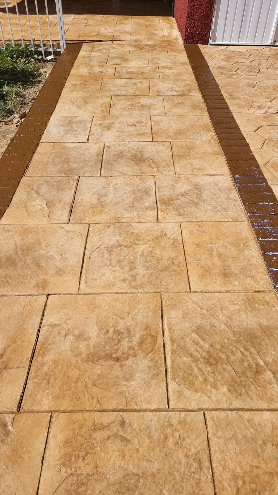

Nacho Paveade
Reformas en Madrid.
De dentro a fuera.
Reformas integrales y parciales, cocinas, baños y hormigón impreso. Trabajamos en Madrid y provincias cercanas.
Tu vivienda.
Tu exterior.
Reformamos interiores y seguimos cuidando nuestra especialidad: pavimentos resistentes, decorativos y adaptados a cada espacio.
Reformas de viviendas
Reformas integrales o por estancias. Albañilería, suelos, revestimientos y pintura.
Ver reformas → 02Cocinas y baños
Renovamos la distribución, los revestimientos y los acabados para el día a día.
Ver interiores → 03Hormigón y pavimentos
Hormigón impreso, pulido y revestimientos decorativos para interiores y exteriores.
Ver pavimentos →
Reformas generales
Otra forma de vivir
tu casa.
Una cocina más práctica, un baño renovado o una vivienda que se adapte a ti. Nos cuentas qué quieres cambiar y valoramos contigo el alcance de la reforma.
- Reformas integrales y parciales
- Cocinas, baños y renovación de estancias
- Albañilería, alicatados, solados y pintura
Servicio local y nacional
Especialistas en hormigón impreso en Madrid
Desde Madrid capital realizamos pavimentos de hormigón impreso para patios, accesos, caminos, porches y zonas de piscina. Estudiamos el soporte, el uso y el acabado antes de preparar cada presupuesto.
Trabajamos en la Comunidad de Madrid y nos desplazamos para proyectos en toda España.
Conocer el servicio en Madrid →Reparación y mantenimiento
¿Tu hormigón impreso ha perdido color?

Obras reales
El acabado se demuestra en obra.
Accede a nuestra galería para ver procesos, detalles y resultados terminados de trabajos reales.
Explorar los proyectos →Zona de trabajo